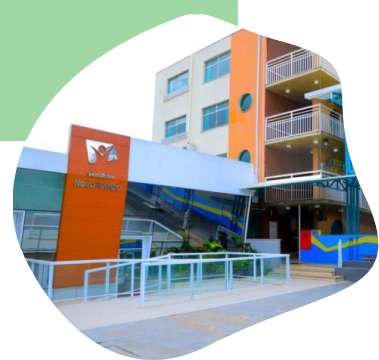
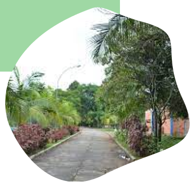
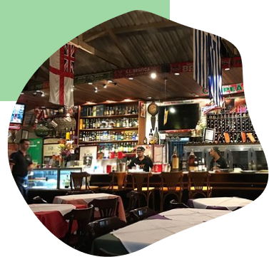

Saiba mais
Comércios
Temas aboradados:
Informações adicionais sobre a lapa
Educação
Um dos grandes destaques da Lapa é o Senac Lapa Scipião, que oferece uma grade educativa com cursos profissionalizantes, de extensão e de formação em diversas áreas. Na educação formal, o bairro oferece escolas tradicionais, como o Colégio Oswald de Andrade, bilíngues, como a Builders, e diversas opções de educação infantil e fundamental, como a Estilo de Aprender, Colégio Madre Paula Montalt e Bougainville.
Lazer
Democrática, a Lapa tem opções de divertimento para todas as idades, perfis e bolsos. O bairro abriga o Sesc Pompéia, uma das unidades mais famosas da rede, que oferece opções gratuitas - ou a preços bem populares - de teatro, música e gastronomia para adultos e crianças. Para a terceira idade, uma opção é o tradicional União Fraterna, que realiza, em um casarão centenário, o Baile da Saudade todos os segundos sábados de cada mês. Para os mais jovens, a balada The Week é uma opção ponto de encontro de várias tribos e estilos que reúne os amantes da vida noturna.
Gastronomia
O bairro é repleto de boas opções de barzinhos, restaurantes, pizzarias e hamburguerias. Entre os destaques, vale visitar o Cacilda, restaurante localizado em frente ao Teatro Cacilda Becker que oferece um cardápio variado em mesas em meio a um espaço onde predomina o verde, e o Dona Felicidade, com um cardápio repleto de brasilidades em um clima convidativo. Para quem prefere a atmosfera de botecos, o Bar Bezerra e o Valadares, no local desde 1962, não podem ficar de fora. Este último é famoso por servir pratos típicos de bares populares, como tremoço, jiló e cebolinha em conserva.
